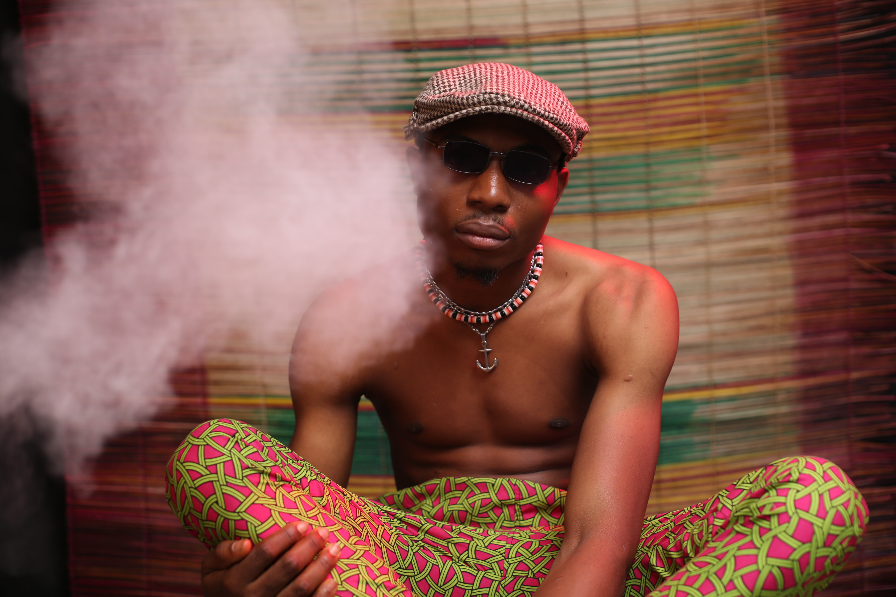
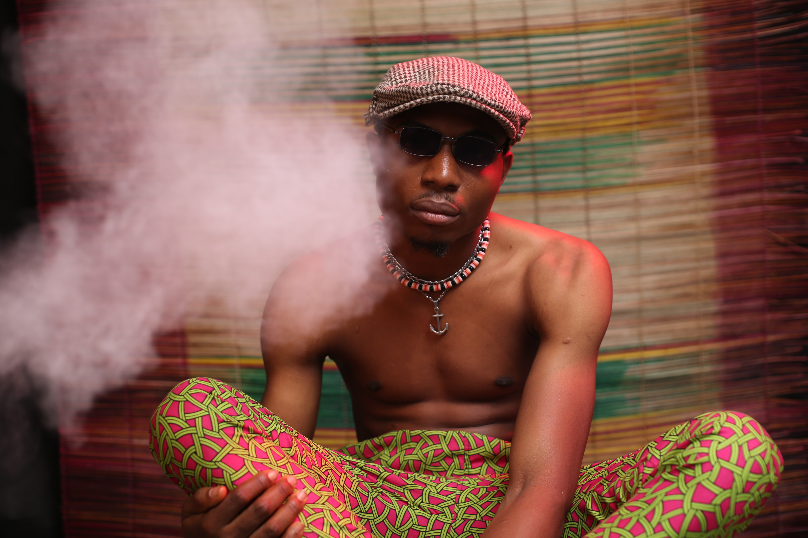

An addiction is a chronic dysfunction of the brain system that involves reward, motivation, and
memory.
It’s about the way your body craves a substance or behavior,
especially if it causes a compulsive or obsessive pursuit of “reward” and lack of concern over.
Over time, addictions can seriously interfere with your daily life. People experiencing addiction are
also prone to cycles of relapse and remission. This means they may cycle between intense and mild use.
Despite these cycles, addictions will typically worsen over time. They can lead to permanent health
complications and serious consequences like bankruptcy. That’s why it’s important for anyone who is
experiencing addiction to seek help. Call 800-622-4357 for confidential and free treatment referral
information, if you or someone you know has an addiction. This number is for The Substance Abuse and
Mental Health Services Administration (SAMHSA).
They’ll be able to provide more information, including guidance on prevention and mental and substance]
use disorders
Many addictions can fit within three categories, which include the following:
Behavioral addiction: Many people associate addiction solely with substances, like alcohol
or drugs. But you can also be addicted to specific behaviors. Common addictive behaviors
include shopping, sex, gambling and video gaming.
Substance addiction: Substance addiction creates a physical dependence on a specific chemical.
People can be addicted to prescription medication, such as opioids, or illicit drugs, such as
crystal meth, heroin or cocaine. Alcoholism is also considered a type of substance addiction.
Impulse addiction: Impulse control disorders can lead to impulse addiction. Someone with an impulse
control disorder struggles to manage their emotions and actions. This disorder may make someone prone
to theft, emotional outbursts or destructive behavior. Approximately 10.5% of people have an impulse
control disorder, according to the fourth edition of the Diagnostic and Statistical Manual of Mental
Disorders.
Alchoholism
Alcohol use often begins during adolescence and becomes more likely as adolescents age. In
2019, almost
2 out of 100 adolescents ages 12 to 13 reported drinking alcohol in the past month and fewer than 1 in
100 engaged in binge drinking. Among respondents ages 16 to 17, fewer than 1 in 5 reported drinking and
about 1 in 10 reported binge drinking.5 It is important to implement prevention strategies during early
adolescence to prevent this escalation.
Historically, adolescent boys were more likely to drink and binge drink than girls. Now, that relationship
has reversed.Alcohol use has declined more in recent years among adolescent boys than it has in girls. As
a result, more adolescent girls report alcohol use and binge drinking than boys.
Smoking
Youth who begin smoking pass through various stages, each influenced by a variety of factors,
before
becoming a daily smoker. The stages can progress in any direction and stop or restart any number of times.
Stage 1: Pre-contemplation/preparation[12] – Youth in this stage have never smoked and most likely have
minimal desires to begin smoking. Adolescents in this stage are likely impervious
to the effects of social pressures for smoking or do not view smoking in a positive light.Stage 2:
Contemplation/Preparation[12] – An adolescent's beliefs about smoking are beginning to change as
they begin to contemplate smoking. Youth will often develop attitudes or envision what smoking wil
l be like before engaging initiating. Notably, these attitudes towards smoking may often be negative,
but are not as salient nor impactful to the adolescent because of either positive media messages or
role models (i.e. parents who are smokers). Adolescents in this stage begin to consider the function
of smoking,with popular reasons including smoking to be cool or independent, reduce social anxiety, and
regulate
emotions.[13]
Drug addiction
Drug addiction, also called substance dependence or dependence syndrome, is a condition where a
person feels
a strong need to take a drug. Addiction also involves other behaviours. These include finding it difficult
to control the
need to use the drug and feeling the use of the drug to be more important than more normal things such as
family or work. When the person does not use the drug for an amount of time, they may suffer from
withdrawal.
When a person is addicted, they are usually addicted to a class (a specific kind) of drug. For example:
Heroin is a drug
that is in the Opiate class. Which means that a person addicted to Heroin may also be seen to have an
addiction to other
opiates such as Morphine.A person who may easily become addicted to drugs is said to have an addictive
personality. The
Diagnostic and Statistical Manual of Mental Disorders defines drug addiction as a mental disorder. Drug
addiction is often linked with other mental
disorders.
What can I do?
Starting a conversation with someone about their drug addiction is never easy, but it’s
important you
come from a place of compassion and understanding.
Remember, no one sets out to become an addict. Drug abuse is often a misguided attempt to cope with
painful issues or mental health problems. Stress tends to fuel addictive behavior, so criticizing,
demeaning, or shaming them will only push your loved one away and may even encourage them to seek
further comfort in substance abuse.Discovering someone you love has a drug problem can generate feelings
of shock, fear, and anger, especially if
it’s your child or teen who’s using. These strong emotions can make communicating with a drug user even
more
challenging. So, it’s important to choose a time when you’re both calm, sober, and free of distractions
to talk.
Offer your help and support without being judgmental.
Don’t delay. You don’t have to wait for your loved one to hit rock bottom—to get arrested, lose their
job,
suffer a medical emergency, or publicly humiliate themselves—to speak out. The earlier an addiction is
treated,
the better Express your concerns honestly. Emphasize that you care for the person and are worried about
their well-being.
Offer specific examples of your loved one’s drug-related behavior that have made you concerned—and be
honest
about your own feelings.listen. Even when you don’t agree with the person, take the time to listen to
what they have to say, without
trying to argue or contradict them. The more your loved one feels heard, the more they’ll see you as
supportive,
someone they can confide in.offer them information about how they can address their drug problem—whether
that’s calling a helpline, talking
to a doctor or counselor, entering a treatment program, or going to a group meeting such as SMART
Recovery, or
a 12-step program like Narcotics Anonymous (NA).
International Day Against Drug Abuse and Illicit Trafficking
The International Day Against Drug Abuse and Illicit Trafficking is a United Nations
International
Day against drug abuse and the illegal drug trade. It is observed annually on 26 June, since 1989.
The date June 26 is to commemorate Lin Zexu's dismantling of the opium trade in Humen, Guangdong,
ending on June 25, 1839，just before the First Opium War in China. The observance was instituted
by General Assembly Resolution 42/112 of 7 December 1987.
On 26 June 1987, two important texts (Comprehensive Multidisciplinary Outline of Future Activities
in Drug Abuse
Control & Declaration of the International Conference on Drug Abuse and Illicit Trafficking) were
adopted at the
International Conference on Drug Abuse and Illicit Trafficking, which was held in Vienna during
17–26 June 1987.
The Conference recommended that an annual day should be observed to mark the importance of the fight
against
drug abuse and illicit trafficking. Both the dates 17 June and 26 June were suggested, and in the
later meetings
26 June was chosen and written into the draft and final resolution.[1]
Contact us at:
aditya.bawangade.21031@iitgoa.ac.in
jay.ayare.21031@iitgoa.ac.in
aryan.goel.21031@iitgoa.ac.in
Phone number: 9421389854 Address: B2-107, IIT Goa boys hostel,
at GEC campus, Farmagudi, Ponda,
Goa, India.

.jpg) 
